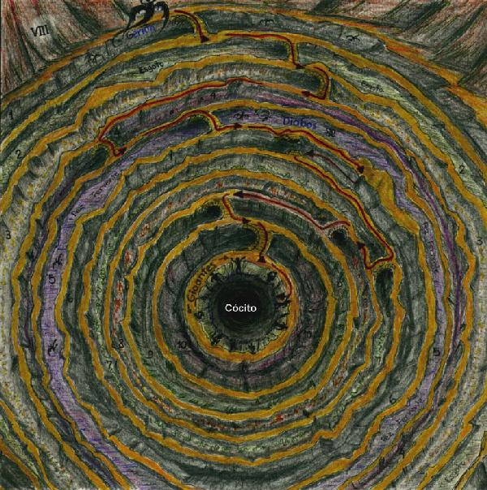
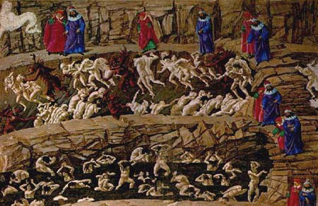

Canto XVIIIMalebolge - Círculo da fraude (8)
|
|  |
| Mapa do oitavo círculo (Malebolge) com suas oito valas interligadas por pontes de pedra. Em cada vala é punida uma categoria de fraude. Ilustração de Helder da Rocha |
Era nesse lugar que nós estávamos, quando do dorso de Gerión fomos despejados. De lá seguiu o poeta à esquerda e eu o acompanhei. À direita já pude ver as almas sofredoras e as novas penas, o novo tormento e os novos torturadores, de que a primeira vala era repleta.
Duas fileiras de almas nuas andavam em fila no fundo. As do nosso lado seguiam com seus rostos virados para nós. As outras, seguiam no sentido oposto. Nos dois grupos, diabos chifrudos surravam as almas com prazer, usando duros chicotes para que não parassem. Elas gritavam de dor, tropeçavam, mas não ousavam reduzir o seu passo.
Enquanto eu andava, reconheci um dos açoitados que sofria. Eu olhei e ele baixou o rosto, tentando se esconder até que eu o segui e perguntei:
- Se eu não estou enganado, tu és Caccianemico Venedico. O que foi que te trouxe para este molho ardido?
- Eu não queria responder - disse o espírito -, mas tua voz me faz recordar o mundo antigo. Eu fui aquele que, por dinheiro, entreguei minha própria irmã Ghisolabella ao marquês d'Este. - depois observou - Mas eu não sou o único bolonhês neste fosso! Esta vala está repleta de rufiões!
Naquele instante, um diabo chegou e lhe surrou com o chicote, dizendo:
- Anda rufião, que aqui não tem fêmeas para explorar! Eu voltei a seguir meu mestre até uma ponte de pedra sob a qual havia um vão por onde passavam os açoitados. Lá o mestre me mostrou outros condenados que caminhavam pelo vale em sentido contrário aos rufiões (que antes não víamos o rosto). Eram os sedutores. Eles, assim como os rufiões, eram movidos por chicotadas. Sem que eu pedisse, o mestre me mostrou várias personalidades:
- Olha aquele que vem, imponente, que não solta uma lágrima sequer de dor. É Jasão, condenado por ter seduzido a jovem Ísfile de Lemnos e depois tê-la abandonado. Ele a seduziu e depois a deixou, sozinha, com criança para criar. Tal pecado é punido com esta pena, e assim, também, Medéia tem aqui a sua vingança.
Tendo atravessado a ponte que unia a primeira beira à segunda, seguimos até a ponte seguinte. Antes de subir, já ouvíamos as respirações ofegantes das almas que sofriam na segunda vala, respirando um vapor nojoso que emanava de um rio de podres fezes ácidas. Tão funda era esta vala que só foi possível ver seu fundo quando chegamos à parte mais elevada e central da ponte. Lá vimos gente imersa no esgoto asqueroso.
|  |
| Sedutores e rufiões (em sentidos opostos) sendo açoitados por diabos na primeira vala. No primeiro plano estão os aduladores imersos no esterco (segunda vala). Ilustração de Sandro Botticelli (século XV). |
Não era fácil reconhecer os condenados, todos cobertos de merda. Fiquei a olhar lá para o fundo, vendo se reconhecia alguém, quando uma das almas gritou:
- Por que olhas mais para mim que para as outras almas sujas desta vala?
- Porque - respondi -, se a memória não me engana, já te vi antes com teus cabelos enxutos. Tu és Alessio Interminei de Luca. É por isto que te olho mais que os outros.
- Estou aqui por que fui um adulador - disse ele -, e enganei pessoas com minha língua perversa.
Depois que Alessio terminou de falar, meu guia me chamou a atenção:
- Vês aquela rameira suja que se coça de modo asqueroso? Ela é a prostituta Taís. Mas agora vamos, pois já vimos o suficiente.